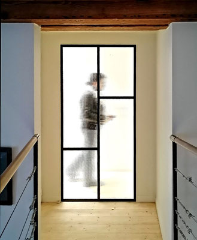
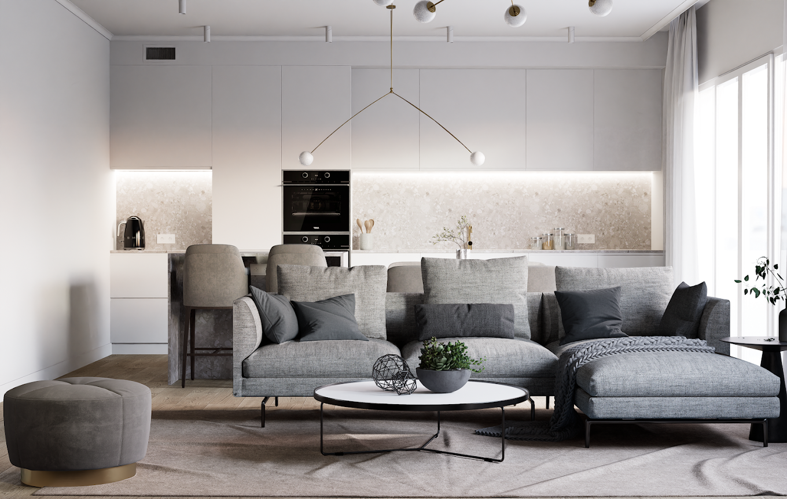
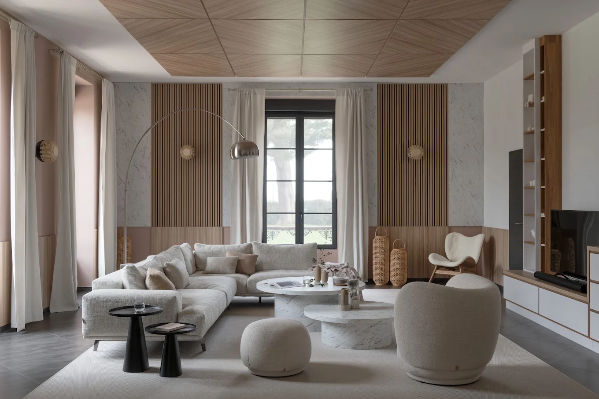

Le Salon épuré
Situé au coeur du 6e arrondissement, cet espace de vie de 45m² a été entierement repensé pour maximiser la lumière naturelle.

Chaque projet commence par une écoute attentive et sensible.
J’observe les volumes, la lumière, les circulations, les matériaux existants et votre manière d’habiter ou de travailler.
Mon objectif n’est pas d’imposer un style, mais de concevoir un intérieur qui vous ressemble.
Experte en couleur et architecte DPLG de formation, j’imagine des espaces où les matières, les couleurs et les contrastes créent des lieux vivants, chaleureux et intemporels.
Mon approche est toujours sensible et créative.
L’imagine des intérieurs qui sont le reflet de votre personnalité, en jouant avec les couleurs, les matières, les volumes et la lumière.
Mon objectif est que vous soyez bien chez vous. Je mets tout en œuvre, avec mon équipe d’artisans, pour que les réalisations soient comme vous les avez rêvé.

Situé au coeur du 6e arrondissement, cet espace de vie de 45m² a été entierement repensé pour maximiser la lumière naturelle.

Pour cette piece de reception, le travail s'est concentré sur la chaleur des materiaux. Le plafond caissonné en chene clair répond aux panneaux muraux acoustiques, offrant une harmonie visuelle et un confort feutré ouvert sur l'exterieur.